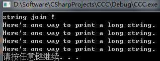

C语言—printf()
作者：追风剑情 发布于：2019-7-16 21:34 分类：C
示例：
#include <stdio.h>
int main(void)
{
int x = 100;//十进制
int x1 = 0100;//八进制
int x2 = 0x100;//或0X100 十六进制
long x3 = 100L;//或100l
long x4 = 020L;
long x5 = 0x10L;
long long x6 = 3LL;
unsigned long long x7 = 3ULL;//或3ull
unsigned long long x8 = 3LLU;//或2llu
long int estine = 99;
long johns;//等效于long int johns;
short int erns = 98;
short ribs;//等效于short int ribs;
//C90标准新增的
unsigned int s_count = 100;
unsigned players;
unsigned long headcount;
unsigned short yesvotes;
//long long类型是C99标准新增的
long long ago;//等效于long long int ago;
//在printf()中只能使用小写%?
printf("s_count = %u; estine = %ld", s_count, estine);
printf("dec = %d; octal = %o; hex = %x \n", x, x, x);
//ld, lo, lx表示long类型的的10进制，8进制，16进制
printf("dec = %ld; octal = %lo; hex = %lx \n", x3, x3, x3);
//h表示short
printf("dec = %hd; octal = %ho; hex = %hx \n", erns, erns, erns);
//如果要显示各进制前缀，需要加#
printf("dec = %d; octal = %#o; hex = %#x \n", x, x, x);
//%lu表示unsigned long
//%lld表示long long
//%llu表示unsigned long long
//打印浮点数
float aboat = 32000.0;
double abet = 2.14e9;
long double dip = 5.32e-5;
//%f打印十进制记数的float
//%e打印指数记数的float
//如果系统支持十六进制格式的浮点数，可用a和A分别代替e和E
//%Lf、%Le、%La打印long double
printf("aboat=%a, abet=%f; abet=%e \n", aboat, abet, abet);
printf("dip=%Lf; dip=%Le \n", dip, dip);
//C99和C11提供%zd用来打印sizeof()的返回值，
//不支持C99和C11的编译器可用%u或%lu代替%zd
printf("size=%zd \n", sizeof(long long));
//多个用双引号括起的字符串可以连接
//下面两句代码等价
printf("a""b" "c" "\n");
printf("abc\n");
getchar();
return 0;
}
运行测试
| 转换说明及其打印的输出结果 | |
| 转换说明 | 输出 |
| %a |
浮点数、十六进制数和p记数法( C99/C11 ) |
| %A | 浮点数、十六进制数和p记数法( C99/C11 ) |
| %c | 单个字符 |
| %d | 有符号十进制整数 |
| %e | 浮点数，e记数法 |
| %E | 浮点数，e记数法 |
| %f | 浮点数，十进制记数法 |
| %g |
根据值的不同，自动选择%f或%e。%e格式用于指数小于-4或者大于或等于精度时 |
| %G | 根据值的不同，自动选择%f或%E。%E格式用于指数小于-4或者大于或等于精度时 |
| %i | 有符号十进制整数（与%d相同） |
| %o | 无符号八进制整数 |
| %p | 指针 |
| %s | 字符串 |
| %u | 无符号十进制整数 |
| %x | 无符号十六进制整数，使用十六进制数0f |
| %X | 无符号十六进制整数，使用十六进制数0F |
| %% | 打印一个百分号 |
| printf()的修饰符 | |
| 修饰符 | 含义 |
| 标记 | 5种标记（-、+、空格、#、0），可以不使用标记或使用多个标记。示例："%-10d" |
| 数字 |
最小字段宽度 如果该字段不能容纳待打印的数字或字符串，系统会使用更宽的字段。示例：”%4d“ |
| .数字 |
精度 对于%e、%E和%f转换，表示小数点右边数字的位数 对于%g和%G转换，表示有效数字最大位数 对于%s转换，表示待打印字符的最大数量 对于整数转换，表示待打印数字的最小位数 如有必要，使用前导0来达到这个位数 只使用.表示其后跟随一个0，所以%.f和%.0f相同 示例：”%5.2f“打印一个浮点数，字段宽度为5字符，其中小数点后有两位数字 |
| h |
和整型转换说明一起使用，表示short int 或 unsigned short int 类型的值 示例：”%hu、%hx、%6.4hd“ |
| hh |
和整型转换说明一起使用，表示signed char 或 unsigned char 类型的值 示例：”%hhu、%hhx、%6.4hd“ |
| j |
和整型转换说明一起使用，表示intmax_t 或 uintmax_t 类型的值。这些类型定义在stdint.h中 示例：”%jd、%8jx“ |
| l |
和整型转换说明一起使用，表示long int 或 unsigned long int 类型的值 示例：”%ld、%8ld“ |
| ll |
和整型转换说明一起使用，表示long long int 或 unsigned long long int 类型的值(C99) 示例：”%lld、%8llu“ |
| L |
和整型转换说明一起使用，表示long double 类型的值 示例：”%Ld、%10.4Le“ |
| t |
和整型转换说明一起使用，表示ptrdiff_t 类型的值。ptrdiff_t是两个指针差值的类型(C99) 示例：”%td、%12ti“ |
| z |
和整型转换说明一起使用，表示size_t 类型的值。size_t是sizeof返回的类型（C99） 示例：”%zd、%12zd“ |
| printf()的标记 | |
| 标记 | 含义 |
| - |
待打印项左对齐。即，从字段的左侧开始打印该项。 示例：“%-20s” |
| + |
有符号值若为正，则在值前面显示加号；若为负，则在值前面显示减号 示例：“%+6.2f” |
| 空格 |
有符号值若为正，则在值前面显示前导空格(不显示任何符号)；若为负，则在值前面显示减号，+标记覆盖一个空格 示例：“%6.2f” |
| # |
把结果转换为另一种形式。如果是%o格式，则以0开始；如果是%x或%X格式，则以0x或0X开始；对于所有的浮格式，#保证了即使后面没有任何数字，也打印一个小数点字符。对于%g或%G格式，#防止结果后面的0被删除 示例：“%#o、%#8.0f、%+#10.3e” |
| 0 | 对于数字格式，用前导0代替空格填充字段宽度。对于整数格式同，如果出现-标记或指定精度，则忽略该标记 |
注意 float参数的转换
对于浮点类型，有用于double和long double类型的转换说明，却没有float类型的。这是因为在K&R C中，表达式或参数中的float类型值会被自动转换成double类型。一般而言，ANSIC不会把float自动转换成double。然而，为保护大量假设float类型的参数被自动转换成double的现有程序，printf()函数中所有float类型的参数(对未使用显示原型的所有C函数都有效)仍自动转换成double类型。因此，无论是K&R C还是ANSI C，都没有显示float类型值专用的转换说明。
示例：打印不同字段宽度的整数
//Visual Studio中加上这句才可以使用scanf()
//否则只能使用scanf_s()
#define _CRT_SECURE_NO_WARNINGS
#include <stdio.h>
#define PAGES 959
int main(void)
{
printf("*%d*\n", PAGES);
//打印两个字段宽度
printf("*%2d*\n", PAGES);
//打印10个字段宽度且右对齐
printf("*%10d*\n", PAGES);
//打印10个字段宽度且左对齐
printf("*%-10d*\n", PAGES);
system("pause");
return 0;
}
示例：打印不同字段宽度的浮点数
//Visual Studio中加上这句才可以使用scanf()
//否则只能使用scanf_s()
#define _CRT_SECURE_NO_WARNINGS
#include <stdio.h>
#define PAGES 959
int main(void)
{
//声明常量
const double RENT = 3852.99;
//自动适配字段宽度
printf("*%f*\n", RENT);
//自动适配字段宽度，科学记数法表示
printf("*%e*\n", RENT);
//右对齐，4个字段宽，保留2位小数
printf("*%4.2f*\n", RENT);
//右对齐，3个字段宽，保留1位小数，会自动进行四舍五入
printf("*%3.1f*\n", RENT);
//右对齐，10个字段宽，保留3位小数
printf("*%10.3f*\n", RENT);
//右对齐，10个字段宽，保留3位小数，科学记数法表示
printf("*%10.3E*\n", RENT);
//左对齐，4个字段宽，保留2位小数
printf("*%+4.2f*\n", RENT);
//右对齐，前面补0，10个字段宽，保留2位小数
printf("*%010.2f*\n", RENT);
printf("--------------\n");
//输出十六进制
printf("%x %X %#x\n", 31, 31, 31);
printf("**%d**% d**% d**\n", 42, 42, -42);
//0标记和精度一起出现时，0标记会被忽略
printf("**%5d**%5.3d**%05d**%05.3d**\n", 6, 6, 6, 6);
system("pause");
return 0;
}
示例：打印不同字段宽度的字符串
#include <stdio.h>
#define BLURB "Authentic imitation!"
int main(void)
{
printf("[%2s]\n", BLURB);
printf("[%24s]\n", BLURB);
printf("[%24.5s]\n", BLURB);
printf("[%-24.5s]\n", BLURB);
printf("The %s family just may be $%.2f richer!\n", "AAA", 5.789);
system("pause");
return 0;
}
示例：转换说明的意义
#include <stdio.h>
#define PAGES 336
#define WORDS 65618
int main(void)
{
/*
转换说明符并不会转换数据类型，只是把要转换的数在内存中的二进制值，
按照转换符代表的数据类型进行解析。
*/
//一些不匹配的整型转换
short num = PAGES;
short mnum = -PAGES;
printf("num as short and unsigned short: %hd %hu\n", num, num);
/*
注意：无符号与有符号整数的转换
short int的大小是2字节；0~32767代表它们本身，而数字32768~65535则表示负数。
其中，65535表示-1，65534表示-2，以此类推。因此-336表示为65200(即，65536-336)
*/
printf("-num as short and unsigned short: %hd %hu\n", mnum, mnum);
printf("num as int and char: %d %c\n", num, num);
/*
int转short int时，int只处理后两个字节，前面的会被截掉。
大于255的整数转%c，只会处理最后一个字节，前面字节会被截掉。
*/
printf("WORDS as int, short, and char: %d %hd %c\n", WORDS, WORDS, WORDS);
/** 混淆整型和浮点型，结果更奇怪 **/
float n1 = 3.0;
double n2 = 3.0;
long n3 = 2000000000;
long n4 = 1234567890;
printf("%.le %.le %.le %.le\n", n1, n2, n3, n4);
printf("%ld %ld\n", n3, n4);
printf("%ld %ld %ld %ld\n", n1, n2, n3, n4);
system("pause");
return 0;
}
运行测试
参数传递
参数传递机制因实现而异。下面以我们的系统为例，分析参数传递的原理。函数调用如下：
printf("%ld %ld %ld %ld\n", n1, n2, n3, n4);
该调用告诉计算机把变量n1、n2、n3和n4的值传递给程序。这是一种常见的参数传递方式。程序把传入的值放入被称为栈(stack)的内存区域。计算机根据变量类型(不是根据转换说明)把这些值放入栈中。因此，n1被储存在栈中，占8字节(float类型被转换成double类型)。同样，n2也在栈中占8字节，而n3和n4在栈中分别占4字节。然后，控制转到printf()函数。该函数根据转换说明（不是根据变量类型）从栈中读取值。%ld转换说明表明printf()应该读取4字节，所以printf()读取栈中的前4字节作为第1个值。这是n1的前半部分，将被解释成一个long类型的整数。根据下一个%ld转换说明，printf()再读取4字节，这是n1的后半部分，将被解释成第2个long类型的整数。类似地，根据第3个和第4个%ld，printf()读取n2的前半部分和后半部分，并解释成两个long类型的整数。因此，对于n3和n4，虽然用了转换说明，但printf()还是读错了字节。
示例：printf()函数的返回值
#include <stdio.h>
//argc: 参数个数 argv[]: 参数数组
int main(int argc, char *argv[])
{
int bph2o = 212;
int rv;
//printf()返回打印字符的个数(包括空格及不可见字符)，
//出错则返回负数
rv = printf("%d F is water's boiling point.\n", bph2o);
printf("The printf() function printed %d characters.\n", rv);
system("pause");
return 0;
}
运行测试
示例：打印较长的字符串
#include <stdio.h>
//argc: 参数个数 argv[]: 参数数组
int main(int argc, char *argv[])
{
//可以在逗号处换行
printf("string join %s",
"!\n");
//方法一：用多个printf()来拼接字符串
printf("Here's one way to print a ");
printf("long string.\n");
//方法二：用反斜杠来断行
printf("Here's one way to print a \
long string.\n");//这里必须从最左边开始，否则缩进也会成为字符串的一部分
//方法三：""+空格+"" ANSI C引入的字符串连接
printf("Here's one way to print a "
"long string.\n");//ANSI C
printf("Here's one way to print a " "long string.\n");
system("pause");
return 0;
}
运行测试 
标签: C语言
日历
最新文章
随机文章
热门文章
分类

存档
- 2022年2月(2)
- 2022年1月(8)
- 2021年12月(5)
- 2021年11月(3)
- 2021年10月(4)
- 2021年9月(9)
- 2021年8月(14)
- 2021年7月(8)
- 2021年6月(5)
- 2021年5月(2)
- 2021年4月(3)
- 2021年3月(7)
- 2021年2月(2)
- 2021年1月(8)
- 2020年12月(7)
- 2020年11月(2)
- 2020年10月(6)
- 2020年9月(9)
- 2020年8月(10)
- 2020年7月(9)
- 2020年6月(18)
- 2020年5月(4)
- 2020年4月(25)
- 2020年3月(38)
- 2020年1月(21)
- 2019年12月(13)
- 2019年11月(29)
- 2019年10月(44)
- 2019年9月(17)
- 2019年8月(18)
- 2019年7月(25)
- 2019年6月(25)
- 2019年5月(17)
- 2019年4月(10)
- 2019年3月(36)
- 2019年2月(35)
- 2019年1月(28)
- 2018年12月(30)
- 2018年11月(22)
- 2018年10月(4)
- 2018年9月(7)
- 2018年8月(13)
- 2018年7月(13)
- 2018年6月(6)
- 2018年5月(5)
- 2018年4月(13)
- 2018年3月(5)
- 2018年2月(3)
- 2018年1月(8)
- 2017年12月(35)
- 2017年11月(17)
- 2017年10月(16)
- 2017年9月(17)
- 2017年8月(20)
- 2017年7月(34)
- 2017年6月(17)
- 2017年5月(15)
- 2017年4月(32)
- 2017年3月(8)
- 2017年2月(2)
- 2017年1月(5)
- 2016年12月(14)
- 2016年11月(26)
- 2016年10月(12)
- 2016年9月(25)
- 2016年8月(32)
- 2016年7月(14)
- 2016年6月(21)
- 2016年5月(17)
- 2016年4月(13)
- 2016年3月(8)
- 2016年2月(8)
- 2016年1月(18)
- 2015年12月(13)
- 2015年11月(15)
- 2015年10月(12)
- 2015年9月(18)
- 2015年8月(21)
- 2015年7月(35)
- 2015年6月(13)
- 2015年5月(9)
- 2015年4月(4)
- 2015年3月(5)
- 2015年2月(4)
- 2015年1月(13)
- 2014年12月(7)
- 2014年11月(5)
- 2014年10月(4)
- 2014年9月(8)
- 2014年8月(16)
- 2014年7月(26)
- 2014年6月(22)
- 2014年5月(28)
- 2014年4月(15)
友情链接
- Unity官网
- Unity圣典
- Unity在线手册
- Unity中文手册(圣典)
- Unity官方中文论坛
- Unity游戏蛮牛用户文档
- Unity下载存档
- Unity引擎源码下载
- Unity服务
- Unity Ads
- wiki.unity3d
- Visual Studio Code官网
- SenseAR开发文档
- MSDN
- C# 参考
- C# 编程指南
- .NET Framework类库
- .NET 文档
- .NET 开发
- WPF官方文档
- uLua
- xLua
- SharpZipLib
- Protobuf-net
- Protobuf.js
- OpenSSL
- OPEN CASCADE
- JSON
- MessagePack
- C在线工具
- 9RIA天地会
- 游戏蛮牛
- GreenVPN
- 聚合数据
- 热云
- 融云
- 腾讯云
- 腾讯开放平台
- 腾讯游戏服务
- 腾讯游戏开发者平台
- 腾讯课堂
- 微信开放平台
- 腾讯实时音视频
- 腾讯即时通信IM
- 微信公众平台技术文档
- 白鹭引擎官网
- 白鹭引擎开放平台
- 白鹭引擎开发文档
- FairyGUI编辑器
- PureMVC-TypeScript
- 讯飞开放平台
- 亲加通讯云
- Cygwin
- Mono开发者联盟
- Scut游戏服务器引擎
- KBEngine游戏服务器引擎
- Photon游戏服务器引擎
- 码云
- SharpSvn
- 腾讯bugly
- 4399原创平台
- 开源中国
- Firebase
- Firebase-Admob-Unity
- google-services-unity
- Firebase SDK for Unity
- Google-Firebase-SDK
- AppsFlyer SDK
- android-repository
- CQASO
- Facebook开发者平台
- gradle下载
- GradleBuildTool下载
- Android Developers
- Google中国开发者
- AndroidDevTools
- Android社区
- Android开发工具
- Google Play Games Services
- Google商店
- Google APIs for Android
- 金钱豹VPN
- TouchSense SDK
- MakeHuman
- Online RSA Key Converter
- Windows UWP应用
- Visual Studio For Unity
- E时代IDC主机
- Open CASCADE Technology
- 慕课网
- 奇优广告联盟
- 阿里云服务器ECS
- 在线免费文字转语音系统
- AI Studio
- 网云穿
- 百度网盘开放平台
- 迅捷画图
- 菜鸟工具
- [CSDN] 程序员研修院
- 华为人脸识别
交流QQ群
-
Flash游戏设计: 86184192
Unity游戏设计: 171855449
游戏设计订阅号

捐赠 (用于支付服务器费用)
-
微信

支持宝

捐赠的朋友可与博主成为微信好友，点击下方【给我写信】给博主留言。